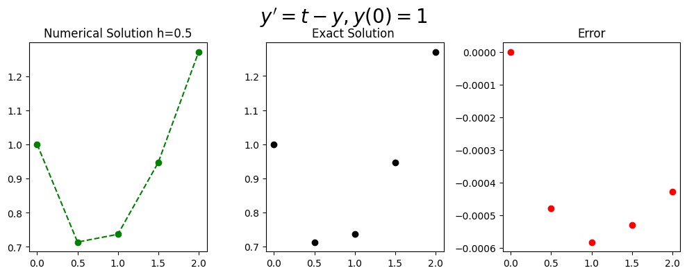

Example 4th order Runge Kutta#
The general form of the differential equation
(260)#\[\begin{equation} y^{'}=t-y, \ \ (0 \leq t \leq 2) \end{equation}\]
with the initial condition
(261)#\[\begin{equation}y(0)=1,\end{equation}\]
Has the exact solution. \begin{equation} y= 2e^{-t}+t-1.\end{equation}
Setting up Libraries#
import numpy as np
import math
%matplotlib inline
import matplotlib.pyplot as plt # side-stepping mpl backend
import matplotlib.gridspec as gridspec # subplots
import warnings
warnings.filterwarnings("ignore")
Defining the function#
(262)#\[\begin{equation}f(t,y)=t-y\end{equation}\]
def myfun_ty(t,y):
return t-y
Initial Setup#
Defining the step size \(h\) from the interval range \(a\leq t \leq b\) and number of steps \(N\)
(263)#\[\begin{equation}h=\frac{b-a}{h}.\end{equation}\]
This gives the discrete time steps,
(264)#\[\begin{equation}t_{i}=t_0+ih,\end{equation}\]
where \(t_0=a\).
# Start and end of interval
b=2
a=0
# Step size
N=4
h=(b-a)/(N)
t=np.arange(a,b+h,h)
Setting up the initial conditions of the equation#
(265)#\[\begin{equation}w_0=IC\end{equation}\]
# Initial Condition
IC=1
w=np.zeros(N+1)
y=(IC+1)*np.exp(-t)+t-1#np.zeros(N+1)
w[0]=IC
4th Order Runge Kutta#
(266)#\[\begin{equation}k_1=f(t,y),\end{equation}\]
(267)#\[\begin{equation}k_2=f(t+\frac{h}{2},y+\frac{h}{2}k_2),\end{equation}\]
(268)#\[\begin{equation}k_3=f(t+\frac{h}{2},y+\frac{h}{2}k_2),\end{equation}\]
(269)#\[\begin{equation}k_4=f(t+\frac{h}{2},y+\frac{h}{2}k_3),\end{equation}\]
(270)#\[\begin{equation}w_{i+1}=w_{i}+\frac{h}{6}(k_1+2k_2+2k_3+k_4).\end{equation}\]
for k in range (0,N):
k1=myfun_ty(t[k],w[k])
k2=myfun_ty(t[k]+h/2,w[k]+h/2*k1)
k3=myfun_ty(t[k]+h/2,w[k]+h/2*k2)
k4=myfun_ty(t[k]+h,w[k]+h*k3)
w[k+1]=w[k]+h/6*(k1+2*k2+2*k3+k4)
Plotting Results#
fig = plt.figure(figsize=(10,4))
# --- left hand plot
ax = fig.add_subplot(1,3,1)
plt.plot(t,w, '--o',color='green')
#ax.legend(loc='best')
plt.title('Numerical Solution h=%s'%(h))
ax = fig.add_subplot(1,3,2)
plt.plot(t,y,'o',color='black')
plt.title('Exact Solution ')
ax = fig.add_subplot(1,3,3)
plt.plot(t,y-w, 'o',color='red')
plt.title('Error')
# --- title, explanatory text and save
fig.suptitle(r"$y'=t-y, y(0)=%s$"%(IC), fontsize=20)
plt.tight_layout()
plt.subplots_adjust(top=0.85)

import pandas as pd
d = {'time t_i': t, '4th Order Runge Kutta, w_i': w,'Exact':y,'Error |w-y|':np.round(np.abs(y-w),5)}
df = pd.DataFrame(data=d)
df
| time t_i | 4th Order Runge Kutta, w_i | Exact | Error |w-y| | |
|---|---|---|---|---|
| 0 | 0.0 | 1.000000 | 1.000000 | 0.00000 |
| 1 | 0.5 | 0.713542 | 0.713061 | 0.00048 |
| 2 | 1.0 | 0.736342 | 0.735759 | 0.00058 |
| 3 | 1.5 | 0.946791 | 0.946260 | 0.00053 |
| 4 | 2.0 | 1.271100 | 1.270671 | 0.00043 |